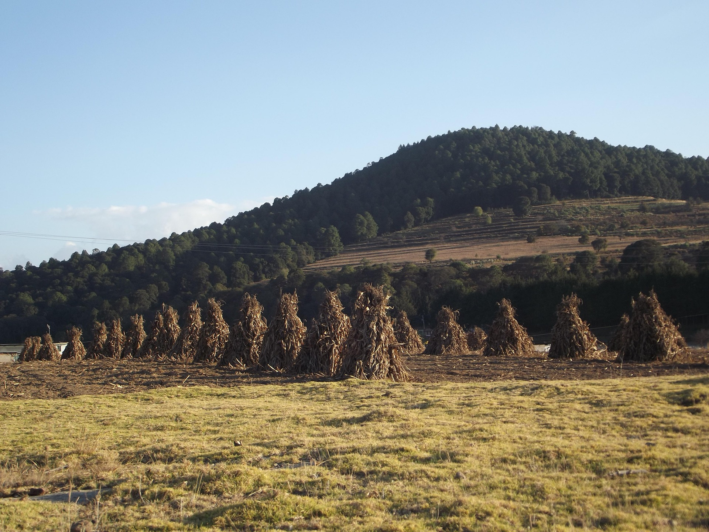
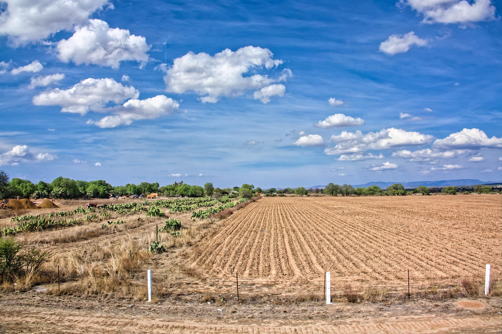
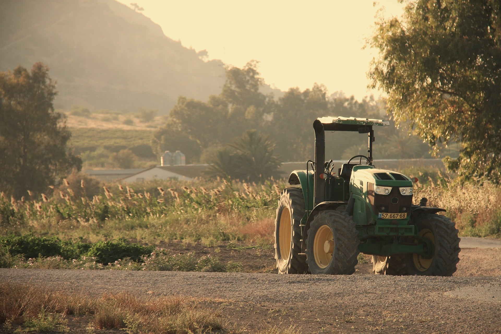

02 / EL CONTEXTOLa tierra primero
Un campo vivo lee su propio ritmo.
La humedad, el clima y la estructura del suelo cambian. La decisión también debería hacerlo.
Agricultura · agua · vida
AtlaIA conecta la inteligencia de las raíces con la claridad de los datos para cuidar el agua desde el lugar donde empieza todo: el suelo.
La idea
Regar por costumbre es decidir sin escuchar. AtlaIA observa lo que ocurre bajo el cultivo y convierte esa lectura en una forma más consciente de cuidar cada gota.

02 / EL CONTEXTOLa humedad, el clima y la estructura del suelo cambian. La decisión también debería hacerlo.

03
0401 / Biotecnología radicular
Micorrizas y bacterias PGPB acompañan a la raíz para crear una relación más eficiente con el suelo y con el agua.
Las micorrizas extienden el alcance de la raíz.
Forman conexiones subterráneas que ayudan a explorar el suelo y acceder a agua y nutrientes con mayor eficiencia.
Las bacterias acompañan el crecimiento.
Las PGPB se relacionan con la zona radicular y apoyan un suelo con mejor estructura y actividad biológica.
02 / Inteligencia agrícola
El Machine Learning permite encontrar patrones entre humedad, temperatura y condiciones del entorno. No reemplaza la experiencia: la vuelve más informada.
Entender el enfoque ↓Una nueva manera de mirar
AtlaIA une biología, observación y aprendizaje para que el cuidado del agua sea parte natural de cómo se cultiva.